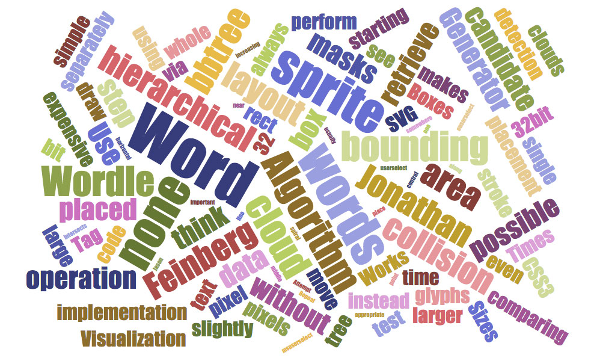

출생: 1951년 9월 20일, 부산광역시소속: 새누리당(부산 영도구, 대표최고위원)선호도: 3.14

실시간 선호도
월별 지지율
김무성 관련 검색어

 영상
영상 영상
영상김무성 관련 기사
공유 많은 기사
- 1.'천황 탄생일' 표시한 경남도 달력 전량 회수8173
- 2.김무성 유학생 비하 발언에 외신 기자도 "어이 없다"7069
- 3.손석희 앵커의 그 한 마디, 눈물이 맺혔다3933
- 4.'안철수 탈당'이 호재? 야당 지지율 오르고 입당 쇄도3649
- 5.안철수 떠나보낸 문재인, 새 당원 '총알' 얻었다3533
- 6.'청문회 자해'만 보도한 KBS, 언론 맞습니까2703
- 7.세월호 특조위 청문회가 밝혀 낸 '사실과 의혹'2677
- 8."탄저균 실험 처음"이라더니... 주한미군 15번 더했다2432
- 9.해경, 특조위 정면도전 "고생시키는 저의가 뭡니까"2350
- 10.진보교육감에 '경고' 처분한 교육부, 징계권 없다2279